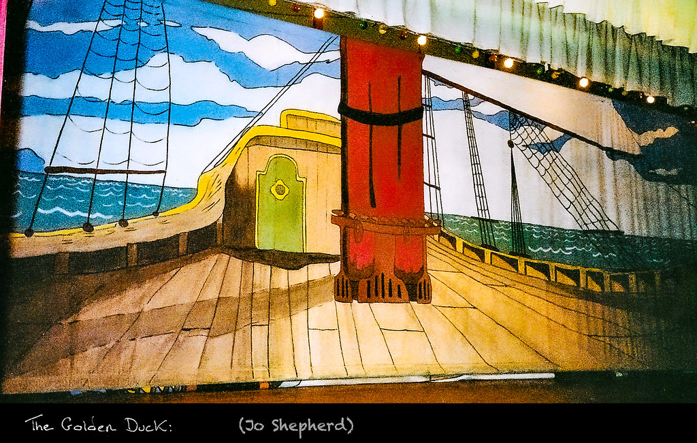

My Vocabulary Page
vanguard n(singular) //
the leaders of a movement in society, e.g. in politics, art, industry, etc
the vanguard of something
1.1/ The party claimed to be the vanguard of the world revolutionary movement.
in the vanguard of something
1.2/ He is in the vanguard of economic reform.
1.3/ These craftspeople are in the vanguard in the art of modern furniture design.
1.4/ The company is proud to be in the vanguard of scientific progress.
see also: at/in the forefront, pioneer, revolutionize, revolutionary
n(singular) the vanguard: the part of an army or navy
that leads an attack on an enemy
2.1/ The army was advancing steadily and the vanguard was already at the border.
2.2/ "The Russian vanguard led by Kulnev fought the French vanguard
for the whole day near the village of Yakubovo."
n(singular) the rearguard
2.3/ "The remaining French rearguard held a sliver of land around
Dunkirk." /'dʌn.kɜrk/
full stop n(c) //
(US: period) the symbol (.) used in writing at the end of a sentence
or at the end of the short form of a word
1.1/ He keeps missing the full stops off the ends of his sentences.
1.2/ Make sure you put a full stop at the end of every sentence.
used at the end of a sentence to emphasize that there is nothing more
to say about a subject
2.1/ Look, I'm not lending you my car, full stop!
2.2/ I've already told you—we can't afford it, full stop!
(idiom) come to a full stop: end, especially because of problems
3.1/ It looks like negotiations between the two sides have come to a full stop.
3.2/ "The working relationship comes to a full stop."
3.3/ "We won't be too surprised when love comes to a full stop."
daily grind n(singular) //
a person's daily work routine, esp when it is tiresome.
1/ "How did you deal with the daily grind?"
2/ Well, it’s Monday. Time to start another week of the daily grind.
3/ As soon as he has the money to retire, he plans to leave the daily grind
and travel more.
4/ I'm so thrilled to be off next week - I really need a break from the daily grind.
the daily grind of something/doing something
5/ The daily grind of taking care of three children was wearing her down.
6/ "It's a talented dance to keep the daily grind of a job from
sapping a writer's energy."
see also: a daily routine, day in day out
day in day out idiom //
(every day) done or happening every day for a long period of time,
esp of something boring
1/ I have to do the same boring jobs day in day out.
2/ I do the same things day in, day out.
3/ Living on junk food day in day out is not good for you.
day in and day out
4/ Day in and day out, I pass that same woman walking her dog.
5/ "Success is the sum of small efforts, repeated day in and day out."
air conditioning n(u) //
the system used for keeping the air in a building or vehicle cool
1.1/ "Avoid using your stove or oven while your air conditioning is out of order."
1.2/ "Please note that air conditioning is in service from July 1 to September 30,
and not in service from October 1 to June 30."
1.3/ If you don't keep the windows closed, the air conditioning can't work properly.
have air conditioning
1.4/ I wish my car had air conditioning.
1.5/ The coach has air conditioning and reclining seats.
1.6/ "At a certain hotel, every room has air conditioning or cable TV or both."
without air conditioning
1.7/ How do you manage to work in this heat without air conditioning?
equipped with air conditioning
1.8/ The classroom is equipped with air conditioning.
1.9/ Because of the hot climate, all cars are equipped with air conditioning.
an air-conditioning system
1.10/ "The air-conditioning system is broken down at work.
We have more than 30o inside."
n(c) an air-conditioning unit, an air conditioner
/'er kən''dɪʃənər/ :
a machine that keeps the air in a building cool
2.1/ "Seeing the temperature ticking upward may be a good reminder
to buy an air conditioner."
2.2/ "How much does it cost to repair an air conditioner?"
2.3/ "How can I install an air conditioner in a window with
a very deep exterior ledge?"
2.4/ "My parents turn off the air conditioning unit while I'm still using it."
2.5/ "To turn on the air-conditioning unit, press the top left button
on the control panel."
(adj) air-conditioned /'er kən''dɪʃənd/
3.1/ I am lucky enough to work in an air-conditioned office.
3.2/ "Are there any dangers of staying in an air-conditioned environment for long?"
3.3/ "The room is always air-conditioned."
be resigned to something/doing something idiom //
accept something unpleasant that cannot be changed or avoided
1.1/ She seems resigned to losing the race.
1.2/ He was resigned to never seeing his birthplace again.
1.3/ "You are resigned to leaving the city with this mystery unsolved."
1.4/ "While he's still a partner, he's resigned to writing off his investment."
resign yourself to something/doing something
1.5/ He resigned himself to living alone.
1.6/ She resigned herself to her fate.
1.7/ We had to resign ourselves to taking a loss on the sale.
(adj) resigned
2.1/ "Kakashi will just give a resigned look at Guy because
it's so obvious and his friend is completely oblivious."
2.2/ My response is a resigned shrug of the shoulders.
2.3/ "We'll have to leave," she said with a resigned sigh.
2.4/ "Oh well," she said with a resigned look in her eyes.
2.5/ They are resigned and a little depressed at the thought of
losing money for at least the first year.
make the difference idiom //
(also: make a difference) have an important effect or influence
on something or somebody
1/ Whatever she did, it made no difference.
2/ The margin of victory was so narrow that just a few votes could have
made the difference.
3/ She didn't play any better, but she was more aggressive.
I think that really made the difference today.
make a(/the) difference to something
4/ One more person wouldn’t make any difference to the arrangements.
5/ "You do not have to be an executive to make a difference
to the status quo."
6/ "Every donation makes a difference to their lives."
make a(/the) difference between A and B
7/ Getting others involved in your aims could make the difference
between success and failure.
8/It could make the difference between missing your train and
getting to work on time.
make all the difference
9/ A few ricochets have made all the difference.
10/ Having a good teacher has made all the difference for Alex.
distinguish v(i,t) //
notice or understand the difference between two things,
or make one person or thing seem different from another
distinguish A from B
1.1/ I sometimes have difficulty distinguishing Spanish from Portuguese.
1.2/ It was hard to distinguish one twin from the other.
1.3/ What was it that distinguished her from her classmates?
1.4/ The power of speech distinguishes human beings from animals.
1.5/ It's not the beauty so much as the range of his voice that
distinguishes him from other tenors.
1.6/ "We should take a sniff at everything and distinguish the good from the bad."
distinguish between A and B
1.7/ He's colour-blind and can't distinguish between red and green easily.
1.8/ It's important to distinguish between business and pleasure.
1.9/ At what age are children able to distinguish between right and wrong?
1.10/ English law clearly distinguishes between murder and manslaughter.
distinguish the difference between A and B
1.11/ Here, one can clearly distinguish the difference between the two rivers
1.12/ He tried to distinguish the difference between common beliefs about hypnosis
and what was actually occurring.
distinguish A and B, distinguish something
1.13/ Sometimes reality and fantasy are hard to distinguish.
1.14/ We can distinguish five meanings of the word 'mad'.
1.15/ The adult bird can be readily distinguished by its orange bill.
(adj) distinguishing
1.16/ Does your cat have any distinguishing marks?
1.17/ "Do I have a distinguishing mark on my body?"
distinguish yourself: do something so well that you are admired and praised for it
distinguish yourself as something
2.1/ He distinguished himself as a writer at a very early age.
2.2/ At school, she distinguished herself as an outstanding debater.
2.3/ She has already distinguished herself as an athlete.
(other examples)
2.4/ He quickly distinguished himself in his chosen career.
2.5/ "She has worked hard to distinguish herself in politics."
2.6/ Richardson rapidly distinguished himself with his diligence and industry.
v(t) (make out) be able to see or hear something
3.1/ I could not distinguish her words, but she sounded agitated.
3.2/ She could not distinguish the make and colour of the car in the fading light.
3.3/ "All that the eye can distinguish on the horizon are a few of
the loftiest summits as it turns toward the east."
in the distance phrase //
at a point that is far away
1/ I could hear gunfire in the distance.
2/ On a clear day you can see the temple in the distance.
3/ We spotted a golden eagle in the distance.
4/ In the distance, you can see the tops of skyscrapers.
5/ In the distance we could see three giraffes walking to the watering hole.
6/ I can see things close up very clearly but things in the distance
are quite blurred.
up close idiom //
(also: close up/ close to) in a position very near to something
1.1/ Close up she was no less pretty.
1.2/ The picture looks very different when you see it close to.
1.3/ I like those silver earrings in the window. Can I see them up close?
adj(before noun) up-close
1.4/ The highlight of the safari was having an up-close encounter with a giraffe.
1.5/ "Daily bicycle rental and organized cycling holidays provide an up-close look
at the countryside."
close up to somebody/something: very near in space to somebody/something
2.1/ She snuggled close up to him.
2.2/ "I would not want to be close up to a bear."
2.3/ "We were able to walk close up to the rock, seeing caves, crevices, tide marks
and remains of waterfalls, cave paintings and ancient meeting places."
zoom in v //
(cause a camera or computer to) make the image of something/somebody
appear much larger and nearer
1.1/ At the beginning of the film, the camera zooms in to show two people
sitting by the side of a river.
1.2/ In Image View, you can zoom in to display the details of a page,
or zoom out to make the page smaller on the screen.
zoom in on something
1.3/ Television cameras zoomed in on the fans cheering in the stands.
1.4/ "I want the camera to zoom in on the player as he walks closer to the object."
zoom out: (cause a camera or computer to) make the image of
something/somebody appear much smaller and further away
2.1/ Click on a photo of any student, and it zooms out to full-size.
2.2/ Zoom out and aim at Uncle Dave flipping burgers on the grill.
2.3/ "To zoom out you pinch your fingers together again."
2.4/ "The best leaders can zoom in to examine problems and then
zoom out to look for patterns and causes."
reputation n(c,u) //
the opinion that people have about what somebody/something is like,
based on what has happened in the past
1.1/ The hotel has a good(/bad) reputation.
build/gain/establish/earn a reputation
1.2/ "It can take years to build a good reputation, but just moments to destroy it."
1.3/ "A malingerer, one who avoids work, is unlikely to gain a reputation
for reliability."
damage/ruin/destroy/tarnish a reputation
1.4/ His reputation was destroyed when he was caught stealing some money.
1.5/ "He attempts to ruin my reputation."
1.6/ "One careless choice can ruin your reputation and your career."
a reputation for something/doing something
1.7/ The company has a worldwide reputation for quality.
1.8/ The company enjoys an international reputation for quality of design.
1.9/ The newspaper has a reputation for being littered with spelling mistakes.
1.10/ He is a politician with a reputation for honesty.
1.11/ She has a reputation for open-mindedness and original thinking.
1.12/ I'm aware of Mark's reputation for being late.
the reputation of something/doing something
1.13/ She has the reputation of being a good doctor.
1.14/ He has the reputation of being a hard worker.
1.15/ "It enables Hong Kong to truly acquire the reputation of being the best
international city in Asia."
a reputation as something
1.16/ He earned a reputation as an entertaining speaker.
1.17/ She soon established a reputation as a first-class cook.
a reputation as + adj
1.18/ His work in Congress won him a reputation as reliable and industrious.
live up to your reputation
1.19/ The weather in England is living up to its reputation.
1.20/ "I have to live up to my reputation for being frugal."
(idiom) by reputation: not directly, by hearing what other people say
2.1/ The two men know each other only by reputation.
2.2/ She is, by reputation, very difficult to please.
2.3/ "Singapore is by reputation the most expensive city in the world."
see also: repute, fame, be well known for something, be renowned for something
impulse n(c) //
a sudden strong wish to do something
1.1/ I resisted the impulse to laugh.
have an impulse to do something
1.2/ I had this impulse to dye my hair red.
1.3/ I had this sudden impulse to shout out 'Nonsense!' in the middle of her speech.
1.4/ He had a sudden impulse to stand up and sing.
a natural impulse
1.5/ My natural impulse was to shout for help.
my first impulse
1.6/ Her first impulse was to run away.
1.7/ Her first impulse was to turn and walk away.
impulse buying, impulse shopping
1.8/ "How do you resist impulse shopping?"
1.9/ "At the end of the day, retailers are not likely to add website tools
that discourage impulse shopping."
on (an) impulse: because you suddenly want to,
although you haven't planned to
2.1/ "We buy a lot of things on impulse."
2.2/ The door was open and on impulse she went inside.
2.3/ He called Judy on impulse and invited her to lunch.
2.4/ Acting on impulse, she grabbed her camera and ran after the man.
2.5/ She decided, on an impulse, to get in touch with some of her old classmates.
2.6/ On an impulse, he went into the florist's and bought a huge bunch of roses.
n(c) (stimulus; urge)
3.1/ We try to give an impulse to the struggling car industry.
3.2/ He was motivated by the impulse for social reform.
3.3/ It is the passions which provide the main impulse of music.
grocery n(c) //

(US: a grocery store) a store that sells food and small things for the home
1.1/ "Do you ever go to the grocery store and realize you have
forgotten your shopping list?"
1.2/ "Do you still go to the grocery store, or do you do your
shopping online, and why?"
1.3/ "My friends and I had to complete a mission in a grocery store without
getting caught by the employees."
a corner grocery store
1.4/ When my parents were both teenagers, my father worked
in a corner grocery store.
see also: a supermarket
n(plural) groceries: food and other goods sold by a grocer or at a supermarket
2.1/ I was carrying three heavy bags of groceries.
2.2/ More people are buying their groceries online.
2.3/ Mom wanted me to get the groceries.
2.4/ He walked in and set the bag of groceries down on the floor.
(adj) grocery: connected with groceries
3.1/ "Respect for teachers won't pay the grocery bill."
3.2/ "Then I started to the counter to pay my grocery bill."
do (my) grocery shopping: shop for groceries
3.3/ But people are still venturing out to do grocery shopping and to visit parks.
3.4/ Nic wakes up at 6 a.m. every morning to do grocery shopping
for the day’s orders.
3.5/ "I would like to go to the supermarket and do my grocery shopping."
red-handed adj //
catch somebody red-handed: find someone in the act of doing something illegal
1/ He must be caught red-handed to secure a conviction.
2/ The guards caught the thief red-handed.
3/ "Upon spotting the molester, the mother raised an alarm and caught the
molester red-handed near Kurla station."
be/get caught red-handed doing something
4/ "I was caught red-handed cheating on my husband."
5/ He was caught red-handed taking money from the till.
6/ The man was caught red-handed smuggling drugs.
7/ "I was caught red-handed cheating on a test."
8/ "The richest casino owner apparently got caught red-handed doing myriad
illegal acts to save his investment."
see also: get caught doing something
profile n(c) //
a short description of someone's life, work, character and etc
1.1/ There’s a profile of producer Hal Willner in New York magazine.
1.2/ We first build up a detailed profile of our customers and their requirements.
1.3/ He fits the profile of the killer.
1.4/ The magazine published a short profile of the new mayor.
1.5/ Margo was told to write a profile about him.
a job profile, a financial profile, a social profile
1.6/ The job profile suits his experience exactly.
1.7/ "Should I provide my financial profile in Scotia Bank?"
1.8/ "Your social profile is like your digital business card. It should tell someone
who you are, what you do, and what you're all about."
n(c) information about a person's life, work and interests
on a social networking website
2.1/ You can update your Facebook profile.
2.2/ You can post your relationship status on your Facebook profile.
n(c) a profile picture
2.3/ When my date arrived at the restaurant, he looked nothing like
his profile picture.
2.4/ Usually, you can also see a thumbnail of someone's profile picture,
and a list of people they are friends with.
n(c) the amount of public attention and notice that something receives
3.1/ Her popularity has done great things for the profile of the sport.
increase/improve/enhance/boost/raise the profile of somebody(/something)
3.2/ We need to increase our company's profile in Asia.
3.3/ We want to improve the profile of women’s health issues.
3.4/ This is a campaign to boost the profile of the city as a cultural leader.
3.5/ The deal will certainly raise the company's international profile.
a high profile, a low profile
3.6/ He keeps a low profile and doesn't go after headlines.
3.7/ She has had a high profile in the world of fashion for many years.
3.8/ There is a growing number of women in high-profile positions
in the government.
see also: high profile, low profile, reputation, n(u) goodwill
n(c) a side view of a person's face
4.1/ Drawing profiles is somehow easier than drawing the full face.
4.2/ She presented her best profile to the camera.
in profile
4.3/ I only saw her face in profile.
4.4/ The actor is photographed in profile, smoking a cigarette.
4.5/ "Could you take a picture of me in profile?"
n(c) the edge or outline of something that you see against a background
5.1/ We can see the profile of the tower against the sky.
5.2/ "In the background, Hokusai has drawn the profile of Mount Fuji
with a thin line of his pen."
5.3/ We can view the sharp profile of the western foothills against the sky here.
profile v(t) //
write or publish a short description of someone's life, work, character, etc
6.1/ This week we profile the 20-year-old singer-songwriter.
6.2/ In her new report she profiles companies with real profits and
proven business models.
6.3/ Gilbert was recently profiled by a Washington business magazine.
profile somebody(/something) in/on something
6.4/ His career is profiled in this month's journal.
6.5/ A number of businesswomen are profiled on the careers website.
6.6/ Every week in the books section of the paper they profile a different author.
v(t) predict the likely behaviour or description of someone such as a customer
or criminal, based on what information you have about them
7.1/ Sales data can be used to profile customers' behaviour.
7.2/ He claims no officer would ever enforce the law by profiling
a so-called 'type' of person or people.
7.3/ "Through a master's degree program in criminal psychology, you'll learn
how to profile criminal activity as well as develop counseling skills used
to prevent parolees /pə''rəʊ'li:z/ and ex-convicts from causing crimes
after their release from jail."
high-profile adj //
attracting a lot of attention and interest from the public
1.1/ He has many high-profile clients.
1.2/ He resigned from a high-profile job as economic adviser to the president.
1.3/ "The B.C. prison guard who helped a high-profile convict escape
was sentenced to three years and three months in jail."
1.4/ "Kenya has launched a high profile campaign against the ivory trade."
1.5/ "Identify the people who will occupy the the critical roles in the case
of a high profile trial."
n(c) a high profile
2.1/ This issue has had a high profile in recent months.
2.2/ "The study of income inequality has a long history in economics, although
it has not always had a high profile among researchers and policymakers."
keep a high profile
2.3/ "The Clintons have, with good reason, gone to great lengths to
keep a high profile among black voters."
2.4/ "Keep a high profile in your professional network by finding and
joining the right groups."
low-profile adj //
(before noun) receiving or involving very little attention
1.1/ "They don't like to be in the spotlight all the time and tend to
prefer a low-profile life."
1.2/ "It's possible that she may have chosen to keep her living arrangements
private for personal reasons, or she may simply prefer a low-profile lifestyle."
1.3/ "If there are difficulties in placing students back to mainstream schools,
EDB will offer placement service and adopt a low profile approach so as to
avoid labelling effect on the one hand and to assist the students to integrate
into normal school life on the other."
n(c) a low profile
2.1/ Despite a relatively low profile, the business has great potential for growth.
2.2/ The story was given a low profile in today's papers.
have/keep/maintain a low profile
2.3/ The senator was keeping a low profile yesterday.
2.4/ I advised her to keep a low profile for the next few days.
2.5/ He's been in a little trouble recently so he's trying to keep a low profile.
switch up v //
change, usually in a way that brings an improvement
1.1/ This type of company switches up and forms a new business strategy
in order to compete.
1.2/ He is no one-trick DJ; he switches up and keeps things fresh.
1.3/ At various points in the story, the gameplay switches up.
1.4/ Then she switches up and sings a fast number.
1.5/ "It's really hard to switch up from vacation and get back to work immediately."
1.6/ "I switch up, from hip hop, back to pop style."
switch up something
1.7/ You might want to switch up a recipe you've made several times
by trying other flavours.
1.8/ I love the way they switched it up by playing the song acoustically.
1.9/ "I had to switch up my plan cause that shit wasn't working."
1.10/ As you become more comfortable with your routine, switch it up by
adding a couple more exercises to your workout.
1.11/ Teachers often complain about districts switching up curriculums
every 2 - 3 years.
1.12/ He wore the same olive-green cargo pants and long-sleeve shirt every night
- although he did switch up his accessories.
switch up a gear: start doing something more effectively or with more energy
2.1/ The match went to a tie-break in which Adebisi was able to
switch up a gear and win.
2.2/ England then applied the pressure, switching up a gear and
stretching the French defence.
2.3/ Japanese pharmaceutical companies have switched up a gear this year.
rebellious adj //
unwilling to obey rules or follow generally accepted standards
of behaviour, dress, etc
1.1/ They are rebellious teenagers.
1.2/ He was a rebellious young man.
1.3/ He has always had a rebellious streak.
1.4/ Her teachers regard her as a rebellious, trouble-making girl.
rebellious to somebody/something
1.5/ "Children would fall asleep; others were openly rebellious to teachers
and abusive with other children."
1.6/ "Students have become rebellious to teachers and can not be
advised by teachers."
rebellious against somebody/something
1.7/ "The writer of Hebrews gave a stern warning to anyone with a heart
that is rebellious against God."
1.8/ "They seem to be all the time rebellious against parents, teachers
and society at large."
rebellious towards somebody/something
1.9/ I'm 18 years old and lately I've been feeling very rebellious towards my dad.
1.10/ "I became very rebellious toward my family and my background."
(adj) opposed to the government of a country;
opposed to those in authority within an organization
2.1/ "Are the French the most rebellious toward their government?"
2.2/ A peace agreement was signed yesterday between the republic
and its rebellious region.
2.3/ "On the eve of the American Revolution as many as 2,500,000 people lived
in the rebellious colonies."
2.4/ "Rebellious groups can organize themselves to ask of members
proof of commitment to the cause."
see also: obey, defy, rebel, disobedient, defiant
bruise n(c) //

a blue, brown or purple mark that appears on the skin
after somebody has fallen, been hit, etc
have a bruise (on/over something)
1.1/ He had a huge bruise over his eye.
1.2/ One or two of the peaches had bruises on them.
1.3/ She's got a nasty bruise on her shin from when he kicked her.
1.4/ My little boy fell off his bike and has a bad bruise on his shoulder.
1.5/ I've got a big purple bruise where I hit my leg against
the corner of the table.
cuts and bruises
1.6/ She suffered only minor cuts and bruises.
1.7/ She had a few cuts and bruises but nothing serious.
1.8/ She was treated for minor cuts and bruises.
1.9/ Her legs were covered in scratches and bruises after her walk
through the forest.
covered in bruises
1.10/ His arms and back were covered in bruises.
1.11/ His legs were covered in bruises.
a bruise goes away
1.12/ "Before a bruise goes away completely, it goes through several
stages of healing."
1.13/ Each individual is unique with how quickly a bruise goes away.
1.14/ "Bruises will eventually settle into brown or yellow hues
before fading away completely."
a recovering bruise
1.15/ "A recovering bruise was still visible underneath McGregor's left eye
as he celebrated."
bruise v(i,t) //
develop a bruise or to cause someone or something to have a bruise
2.1/ How did you bruise your arm?
2.2/ She had slipped and badly bruised her face.
2.3/ She has delicate skin and bruises easily.
2.4/ When the assault was over, Jack stood up, battered and bruised.
2.5/ Strawberries bruise easily.
2.6/ Bananas and other soft fruits bruise easily.
(adj) bruised
2.7/ He suffered badly bruised ribs in the crash.
2.8/ There is a tray of slightly bruised apples.
v(t) be bruised by something:
affect somebody badly and make them feel unhappy and less confident
3.1/ They had been badly bruised by the defeat.
(idiom) bruise your ego
3.2/ I don't think it broke Steve's heart when Cherise left him,
but it certainly bruised his ego.
3.3/ "Your ego is bruised but you will find love again."
3.4/ "I realize now that my bruised ego blinded me from approaching
the situation with humility."
sling n(c) //
a band of cloth that is tied around a person’s neck
and used to support a broken or injured arm
have an arm in a sling
1.1/ He had his arm in a sling.
1.2/ I had my arm in a sling for six weeks.
1.3/ "I am a keen horse rider and so, regrettably, I often
have my arm in a sling."
put on a sling, put a sling on my shoulder
1.4/ "Put on a shoulder sling correctly."
1.5/ "I was taken to hospital and I've got bruises on my back, legs and arms.
They also put a sling on my shoulder because there was a lot of pain there."
see also: have a leg in plaster(/in a cast)
1.6/ My leg was in plaster for about six weeks.
1.7/ "I feel that people do treat me differently when I have
my leg in plaster."
see also: a walker, a cane
a device consisting of a band or ropes for holding and lifting heavy objects
2.1/ The engine was lifted in a sling of steel rope.
2.2/ The cylinder was lifted from the seabed in a sling.
sling v(t) //
throw something somewhere in a careless way
3.1/ Don't just sling your clothes on the floor.
3.2/ She slung her coat into the back of the car.
3.3/ If any of the letters aren't interesting just sling them in the bin.
3.4/ I'll just sling together a few things and I'll be ready to go.
sling somebody something
3.5/ Sling me a pen, will you?
3.6/ Sling me an apple, will you?
v(t) put something somewhere where it hangs loosely
4.1/ I usually sling my jacket over the back of my chair.
4.2/ She came in and slung her coat over a chair.
4.3/ Her bag was slung over her shoulder.
4.4/ We slung a hammock /'hæmək/ between two trees.
accumulate v(t) //
collect a large number of things over a long period of time
1.1/ We've accumulated so much rubbish over years.
1.2/ I seem to have accumulated a lot of books.
1.3/ We have accumulated a great amount of evidence.
1.4/ Children gradually accumulate knowledge as they grow up.
accumulate wealth/treasures/a fortune
1.5/ By investing wisely she accumulated a fortune.
1.6/ "After a long career in the antiques trade, Harry had
accumulated many treasures."
1.7/ As people accumulate more wealth, they tend to spend a greater
proportion of their incomes.
1.8/ The table shows what you need to save monthly to accumulate
one million dollars by age 65.
accumulate a debt, accumulate debts
1.9/ The company said the debt was accumulated during it acquisition of
nine individual businesses.
accumulate stamps, collect stamps
1.10/ "Regularly checking and completing daily quests will allow you to
accumulate stamps and track your progress."
1.11/ "Use loyalty punch cards at your business to collect loyalty card stamps
and redeem rewards."
accumulate something into something
1.12/ "Quantifiable measures, such as those generated through self-tracking,
provide the potential to compare and accumulate individuals into
a generalized massAccumulate individuals into a generalized mass."
1.13/ "Some desert plants can accumulate sand into mounds and form nabkhas."
v(i) gradually increase in number or amount
2.1/ Debts began to accumulate.
2.2/ If you don't go through the papers on your desk on a regular basis,
they just keep accumulating.
2.3/ Dust and dirt soon accumulate if a house is not cleaned regularly.
accumulate in somewhere
2.4/ A thick layer of dust has accumulated in the room.
2.5/ Toxic chemicals tend to accumulate in the body.
2.6/ "Over time, sediment accumulates in oceans, lakes, and valleys,
eventually building up in layers and weighing down the material underneath."
v(i) accumulate into something
2.7/ Insights accumulate into viewpoints.
2.8/ "All my unprocessed anger towards other people has accumulated into
one bristling ball."
2.9/ "Candles, flowers, balloons and stuffed animals had accumulated into
a makeshift shrine on the lawn and steps nearby."
2.10/ "Nixon has taken a photo of the Brown sisters every year since,
and the images have accumulated into one of photograph's most affecting
bodies of work."
2.11/ "In a practical scenario, some incomplete processes or bugs could
accumulate into a bigger issue that blocks your progress."
promise v(i,t) //
tell somebody that you will certainly do something
1.1/ They arrived at 7.30 as they had promised.
1.2/ "I'll be back soon," she promised.
1.3/ "I will come round and see you every day," she promised.
promise to do something
1.4/ 'Promise not to tell anyone!' 'I promise.'
1.5/ The college principal promised to look into the matter.
1.6/ He promised faithfully to call me every week.
1.7/ She’s promised to do all she can to help.
promise something
1.8/ I'll see what I can do but I can't promise anything.
1.9/ The government has promised a full investigation into the disaster
1.10/ Last night the headmaster promised a full investigation.
1.11/ I'll look for some while I'm at the shops but I'm not promising anything.
promise something to somebody
1.12/ "You promise a new car to me."
1.13/ He promised the money to his grandchildren.
1.14/ "God promises prosperity to His favoured people."
1.15/ I’ve promised that book to Ian, I’m afraid.
1.16/ Can I have that book back when you've finished because I have
promised it to Sara.
promise somebody something
1.17/ My parents promised me a new car.
1.18/ He promised his grandchildren the money.
1.19/ Her parents promised her a new car if she passed her exams.
1.20/ I've promised myself some fun when the exams are over.
1.21/ I've promised myself a long bath when I get through all this work.
promise that ...
1.22/ The brochure promised that the local food would be superb.
1.23/ The government have promised that they will reduce taxes.
1.24/ Hurry up - we promised we wouldn’t be late.
promise somebody that ...
1.25/ You promised me that you’d be home early tonight.
1.26/ Promise me that you won't tell him.
1.27/ You promised me the car would be ready on Monday.
1.28/ 'Promise me you won’t do anything stupid.' 'I promise.'
1.29/ My parents promised me that they would buy me a new car.
as promised
1.30/ He reappeared two hours later, as promised.
the promised land of milk and honey
1.31/ "Joshua could then lead the Jews from boring manna to
the promised land of milk and honey."
v(t) show signs of something
promise to be something
2.1/ It promises to be a really exciting game.
2.2/ The new movie promises to be one of the biggest money-makers of all time.
2.3/ Tonight’s meeting promises to be a difficult one.
promise something
2.4/ There were dark clouds overhead promising rain.
2.5/ There are dark clouds promising showers later.
2.6/ "Mother Nature promises snow and cold temperatures this week!"
(adj) promising: showing signs of future success or achievement
2.7/ "The drivers of our business are intact, our position is strong
and our future is promising."
2.8/ "The economic prospects of Hong Kong is still promising."
promise n(c) //
the act of saying that you will certainly do something
3.1/ I'll put my things away tonight - and that's a promise!
3.2/ You haven't gone back on your promise, have you?
3.3/ "God's promise never fails, and God does not lie."
make a promise, deliver on a promise
3.4/ I'll try to get back in time, but I'm not making any promises.
3.5/ "I make a promise to you now, brothers and sisters:
the lich king will be defeated!"
3.6/ He had now to deliver on his promises to the Canadian electorate.
keep a promise
3.7/ If I make a promise, I like to keep it.
3.8/ "Keep your promise to me, your servant - the promise you make
to those who obey you."
fulfil(/fulfill) a promise, redeem a promise,
3.9/ "I had fulfilled my promise to her not to leave the house until she did."
3.10/ He fulfilled a campaign promise to end the war.
honour a promise
3.11/ "You have my word on it and, if I do not honour my promise,
I will therefore be a self-confessed liar."
break a promise, a broken promise
3.12/ He simply broke every single promise he ever made me.
3.13/ The minister was under attack for a series of broken promises.
a promise to do something
3.14/ She kept her promise to visit her aunt regularly.
a promise to somebody
3.15/ "Failures can be expected, but I will never accept that I cannot
keep my promise to my children."
a promise from/by somebody
3.16/ These are empty promises from a party not in a position to honour them.
3.17/ It is unlikely that these laws will be changed, despite promises
by the Prime Minister.
a promise of something
3.18/ The government failed to keep its promise of lower taxes.
3.19/ They were lured by government promises of either money or other benefits.
3.20/ "Just as Abraham believed God's promise of Messiah, the. Galatians must
also seek justification through Messiah."
a promise that ...
3.21/ Do I have your promise that you won't tell anyone about this?
n(u) a sign that somebody/something will be successful
4.1/ Their future was full of promise.
4.2/ Their research holds considerable promise.
4.3/ The year began so full of promise, and ended in disappointment.
something of promise
4.4/ She is a pianist /'pi:.ənɪst/ of promise.
4.5/ "Diana is definitely an entrepreneur of promise. She has a traditional
corporate finance background, but was always keen on tech."
show great promise
4.6/ Her work shows great promise.
4.7/ She shows great promise as a fiction writer.
4.8/ His English teacher had written on his report that he showed great promise.
fulfil(/fulfill) early promise
4.9/ He failed to fulfil his early promise.
4.10/ As a child I was quite a good dancer, but I didn't fulfil my early promise.
promise for something
4.11/ This new venture holds great promise for the future.
4.12/ Stem cell research offers real promise for the treatment of currently
incurable diseases.
4.13/ "Netflix, Hulu, and Amazon Prime are considered the big players
in the world of video streaming, while several newer industry entrants show
great promise for success."
synonym: n(u) potential
n(u,singular) promise of something:
a sign, or a reason for hope that something may happen, esp something good
5.1/ The day dawned bright and clear, with the promise of warm, sunny weather.
5.2/ The dog approached, attracted by the promise of food.
5.3/ Organic food seems to hold out the promise of healthy living.
cashier n(c) //
a person whose job is to receive and pay out money in a bank, shop, hotel, etc
1/ "She is a cashier in the supermarket."
2/ "To work as a cashier, it's important to have excellent numeracy skills,
as the job typically involves handling cash and payments."
3/ "Cashiers serve customers at the check out counters at a supermarket
in Pyongyang."
close out a register
4/ "The cashier closes out her register at the end of her shift."
5/ "A cashier closes out this cash register for the day."
cash register n(c) //

(also: a register, a till) a machine in a shop or other business
that records sales and into which money received is put
1/ He gave her $10 from the cash register.
2/ Put the money straight into the cash register.
3/ "Next time you have the register open, could you give me
some change?"
on the cash register(s)
4/ There weren't enough people on the cash registers.
5/ "I think these items have been rung up wrongly on the register."
6/ "I learn to run transactions on a cash register."
a cash register rings
7/ "The cash register rings non-stop."
8/ Each time the transaction occurs the cash register rings.
set cash registers ringing
9/ This is an idea that has set cash registers ringing all over the country.
10/ "Will Rajinikanth's Annaatthe set the cash registers ringing?"
ring a cash register: take a profit
11/ "The music business is exactly that, it is designed to ring a cash register
- and to reach the lowest common denominator."
a cash register is short
12/ "If my cash register is short at the end of the night,
is it my responsibility to pay what's missing?"
13/ "A cash register is short by $19, and the cash register tape totalled $1,550."
checkout counter n(c) //
(also: checkout) the place in a store where you pay
for the things you are buying
1.1/ She works on the checkout at the local supermarket
1.2/ She had to wait in line at the checkout.
1.3/ Your fruit and vegetables will be weighed at the checkout.
1.4/ "Cashiers insist on talking to me at a checkout."
1.5/ If there are customers waiting, they are usually quick to
open another checkout.
wait in the queue, wait in the queue line
1.6/ "We wait in the queue line at the checkout counter."
1.7/ There was a long queue at the checkout and customers were getting impatient.
(phrasal verb) check out: take the things you want to buy
at a supermarket to a counter and pay for them
2.1/ As soon as I get a couple more items, I'll be ready to check out.
2.2/ I had already checked out when I remembered that we were out of milk.
2.3/ "I always go straight to the customer service desk to check out
my groceries anyway."
n(c) a self-service checkout, a self-checkout kiosk
3.1/ "The woman scans groceries at a self service checkout in a supermarket."
3.2/ "Americans prefer a self-service kiosk over a checkout lane
managed by a person."
n(u,singular) self-checkout
3.3/ He uses the self-checkout because there's a shorter line.
3.4/ Many customers are not keen on self-checkout and prefer to use a cashier.
3.5/ "How popular is self-checkout at supermarkets?"
dazzle v(i,t) //
(blind) if a strong light dazzles you, it is so bright that
you cannot see for a short time
1.1/ I was dazzled by the sunlight.
1.2/ He was momentarily dazzled by the strong sunlight.
1.3/ "The disco lights are dazzling again at Club BW!"
dazzled by the headlights
1.4/ "You are dazzled by the headlights of a vehicle behind you."
1.5/ "You're driving at night and are dazzled by vehicle headlights
coming towards you."
1.6/ "Most drivers will know the feeling of being dazzled by the headlights of a car
coming in the other direction."
1.7/ "How do you tell somebody in the car behind that their lights are dazzling?"
(adj) dazzling
1.8/ "Dazzling Gleam"
1.9/ "Imagine yourself skating under dazzling disco lights, surrounded by happy
and energetic people, while dancing to the hits of the 70s and 80s."
1.10/ "A dazzling bonfire is the centerpiece for singing songs, building friendship,
the storytelling of ghosts and making lifetime memories."
v(t) dazzle somebody: impress somebody a lot with your beauty, skill, etc
2.1/ He was dazzled by the warmth of her smile.
2.2/ She knows a lot of famous people and tried to dazzle me with their names.
(adj) dazzling: impressing somebody very much
2.3/ We are watching their dazzling display of oriental dance.
2.4/ "Thirty manly actors with dazzling charisma that turned our hearts to mush"
see also: shine, gleam, flash
instalment n(c) //
(US: installment) one of a number of payments that are made regularly
over a period of time until something has been paid for 分期付款
by(/in) instalments
1.1/ We paid for the car by instalments.
1.2/ The tenants agreed to pay off the arrears in instalments.
1.3/ The loan is repayable in monthly instalments.
pay for something in equal instalments
1.4/ The loan can be repaid in 24 monthly instalments.
1.5/ You can pay for your new TV in three equal installments over 60 days.
the instalment is due
1.6/ The final instalment on the loan is due next week.
1.7/ The next instalment is not due until July.
pay the instalments, pay off the instalments
1.8/ "You will have to pay all the instalments due up to the time
you end the agreement."
1.9/ "The cost of housing was appalling high, it usually took
two to three generations to pay off the installments."
1.10/ "How can you cancel a loan and stop paying the installments?"
keep up the instalments, default on the instalments
1.11/ They were unable to keep up the instalments.
1.12/ "What happens if you default on the instalments of a purchased property?"
deposit v(t) //
deposit money (in an account): put money into a bank account
1.1/ I deposited £500 in my account this morning.
1.2/ There's a night safe outside the bank, so you can deposit money
whenever you wish.
1.3/ Millions were deposited in Swiss bank accounts.
1.4/ You can withdraw and deposit money in any of our branches.
v(t) pay a down payment or a security deposit
2.1/ When we moved in, we had to deposit $1,000 with the landlord
in case we broke any of his things.
2.2/ You deposit 20 percent now and pay the rest when the car is delivered.
v(t) deposit somebody/something:
put or lay somebody/something down in a particular place
3.1/ She deposited a pile of books on my desk.
3.2/ The cuckoo deposits her eggs in other birds' nests.
3.3/ I was whisked off in a taxi and deposited outside the hotel.
3.4/ The bus deposited me miles from anywhere.
v(t) put something valuable or important in a place where it will be safe
4.1/ Guests may deposit their valuables in the hotel safe.
4.2/ I deposited my luggage in a locker at the station.
4.3/ "A woman is on her way to deposit jewellery in a bank."
4.4/ "Thank God for our faith in Jesus Christ who has deposited treasures
in earthen vessels. "
v(t) (of a river or a liquid) leave a layer of something
on the surface of something, esp gradually and over a period of time
5.1/ The flood waters fell, depositing mud over the whole area.
5.2/ Sand was deposited which hardened into sandstone.
5.3/ "The Yellow River deposited heavy silt that blocked up many local rivers."
5.4/ "Sediment is deposited in a river delta because the velocity
of the river decreases."
deposit n(c) //
a payment, especially into a bank account
6.1/ Bank deposits have increased by 2.3%.
make a deposit into a bank account
6.2/ Deposits can be made at any branch.
6.3/ To open an account, you need to make a minimum deposit of $500.
6.4/ She made a deposit of £60 into her account.
n(c) a sum of money that is given as the first part of a larger payment
7.1/ All deposits are non-refundable.
7.2/ All deposits for holiday cottages are refundable.
pay/leave $100 as a deposit
7.3/ They normally ask you to pay $100 as a deposit.
7.4/ The shop assistant says if I leave £10 as a deposit,
they'll keep the dress for me.
7.5/ The shop said it would reserve the rug for him if he paid
£20 as a deposit.
put down a deposit
7.6/ They asked us to put down a deposit.
7.7/ We have put down a 5% deposit on the house.
a deposit on something
7.8/ I had to leave a €50 deposit on the bike.
7.9/ We paid a deposit of £5,000 on the house, and paid the balance
four weeks later.
7.10/ "I used my first big pay-cheque to put a deposit on a flat in Mumbai."
synonym: a down payment
n(c) a sum of money that is paid by somebody when they rent something
and that is returned to them if they do not lose or damage the thing
they are renting
8.1/ "A returnable deposit is payable on arrival."
8.2/ It costs $2,000 a week to rent the yacht, with a $200 refundable deposit.
pay/leave a deposit on something
8.3/ They'll probably ask you to leave a deposit.
8.4/ You have to pay a deposit of $1 200 as well as two months' rent.
8.5/ You pay a 10p deposit(/a deposit of 10p) on the bottle, which you get back
when you return the empty bottle. ('p' stands for penny)
get back a deposit
8.6/ You'll get back your deposit once we've checked the bikes are all right.
8.7/ The car costs $50 per day in rental, plus a $200 deposit which you will
get back at the end of the week.
forfeit a deposit, take away a deposit
8.8/ If furniture is damaged, you will forfeit your deposit.
8.9/ "The landlord has no legal right to take away my security deposit
for not finding a replacement roommate."
return a deposit
8.10/ "When I move out, when must the landlord return my security deposit?"
8.11/ "Alabama, Arkansas and Kentucky have a window of 60 days to
return a security deposit."
see also: a security deposit
n(c,u) a layer of a substance that has been left somewhere,
esp by a river or flood, or is found at the bottom of a liquid
9.1/ There are fatty deposits in the arteries of the heart
9.2/ In hard-water areas, a chalky deposit often forms in pipes and kettles.
leave a(/the) deposit
9.3/ The rain left a deposit of mud on the windows.
9.4/ The flood left a thick deposit of mud on the floor.
9.5/ The floods left a thick deposit of mud over the fields.
9.6/ Decant the wine carefully, so that you leave the deposit
in the bottom of the bottle.
9.7/ The flood left a thick deposit of mud over the entire ground floor
of the house.
n(c) a layer of a substance that has formed naturally underground
10.1/ The region has lots of gas and coal deposits.
10.2/ "Valuable mineral deposits are found in rocks of every age."
10.3/ "Wide variety of mineral deposits are found in Asia."
10.4/ "Richest deposits are found in the Pacific Ocean basin in water depths
of 4300 to 4900 meters."
10.5/ "I had the opportunity to study a gold deposit in Placer County, California."
on deposit idiom //
money that is on deposit is saved in a bank or something similar
1/ I've got £5,000 on deposit in the bank.
2/ The company has millions of dollars on deposit with several foreign banks.
3/ " If I have my funds on deposit at two different banks, and those two banks
are closed on the same day, are my funds added together, or insured separately?"
4/ "With interest rates so low, there is little point in having cash on deposit."
5/ "How much is in my current account, please, how much on deposit,
and how much in my money-market reserve account?"
see also: savings, a savings account
direct deposit n(u) //
the system of moving money electronically from one bank account to another
by direct deposit
1/ I get paid by direct deposit.
2/ The school district pays teachers by direct deposit.
3/ Most social security benefits are paid by direct deposit.
4/ "The subsidy from CSSA is usually received by direct deposit."
('CSSA' stands for 'the Comprehensive Social Security Assistance scheme')
5/ "How long does it take to get your tax refund by direct deposit?"
assimilate v(i,t) //
become part of a group, country or society;
make somebody/something become part of a group, country or society
1.1/ New arrivals feel the pressure to assimilate.
assimilate into/to something
1.2/ As a Chinese teen I tried to assimilate into Canadian culture.
1.3/ You shouldn't expect immigrants to assimilate into
an alien culture immediately.
1.4/ "In the past, new migrants had to learn to speak Cantonese if they were
to assimilate into Hong Kong society."
1.5/ "Many people have opinions on the subject, but relatively little
empirical evidence is available on how fully and quickly immigrants
assimilate into U.S. culture."
assimilate somebody (into/to something)
1.6/ Once outsiders, they had now been assimilated into the cultural mainstream.
1.7/ Over time different groups were assimilated into the community.
1.8/ "The European Union should remain flexible enough to assimilate
more countries quickly."
1.9/ "The use of minority languages was discouraged as the government
attempted to assimilate ethnic minorities into the majority population,
promoting the concept of a common national identity."
v(t) fully understand an idea or some information
so that you are able to use it yourself
2.1/ It's hard to assimilate so much information.
2.2/ The committee will need time to assimilate this report.
2.3/ Some people can only assimilate change gradually.
2.4/ We hoped the students would assimilate the information contained
in the lecture.
see also: understand, absorb
v(t) make an idea or a person’s attitude fit into something or be acceptable
be assimilated into something
3.1/ These changes were gradually assimilated into everyday life.
3.2/ "It can take a person sometimes between six months to a year of
consistent practice before the changes and new healthy habits are assimilated
into a person's lifestyle."
v(i,t) absorb food or a substance into the tissue of a living organism
4.1/ In this form vitamins can be easily assimilated by the body.
4.2/ "How does cooked meat assimilate into the body, compared to
a raw food like a banana?"
see also: digest, absorb
stuck-up adj //
too proud and considering yourself to be very important
1/ She's so stuck up, she won't even talk to us.
2/ They are a bunch of stuck-up snobs.
3/ "I am a stuck-up, plan-oriented perfectionist who always has to have
everything 'just so' and my husband is a goofy, fun-loving gamer."
somebody/something looks stuck up
4/ "It looks stuck up to me but we think outside the box."
5/ "She looks stuck-up, like she would talk about herself all night."
6/ "Princess Celestia really looks stuck-up during this episode."
something sounds stuck up
7/ "The first reason craftsmen I know don’t say it outside of the industry
is because it sounds stuck-up."
see also: snobbish
fragile adj // or //
a fragile object is easily damaged or broken:
1.1/ Be careful not to drop it; it’s very fragile.
1.2/ Be careful with that vase - it's very fragile.
1.3/ Some of the more fragile items are kept in a locked case.
packing fragile items
1.4/ "Your parcel contains fragile items that need to remain upright
and require delicate handling."
1.5/ "Packing materials, including bubble wrap, cardboard pieces, styrofoam pellets,
foam packing peanuts, airbags, air pillows, crumpled paper and packing tape,
will help cushion your fragile items to absorb whatever vibration and shock
that may be experienced during transit."
1.6/ "You have to choose a courier service that is known for its experience
and is careful with shipping fragile items overseas."
1.7/ "I put a fragile sticker on any fragile package."
see also: breakable, delicate
(adj) easily destroyed, ended, or made to fail
2.1/ The economy remains extremely fragile.
2.2/ In her job she was used to dealing with actors' fragile egos.
2.3/ Seasonal illnesses expose how fragile the region's healthcare infrastructure is.
2.4/ The assassination could end the fragile peace agreement
that was signed last month.
2.5/ The changes would be disastrous for the fragile recovery of
the UK's oil and gas industry.
2.6/ "I've been wondering recently whether or not our friendship is fragile."
synonym: precarious, vulnerable
(adj) weak or in poor health, physically or mentally
3.1/ He looked rather fragile after his operation.
3.2/ The hospital wing provides a safer environment for medically fragile children.
3.3/ Her father is now 86 and in fragile health.
3.4/ I'm feeling a bit fragile after last night
3.5/ No breakfast for me, thanks - I'm feeling a little fragile
after last night's party.
synonym: vulnerable, frail
vulnerable adj // or //
able to be easily physically or mentally hurt, influenced, or attacked
1.1/ I felt very vulnerable, standing there without any clothes on.
1.2/ She looked very vulnerable standing there on her own.
1.3/ In cases of food poisoning, young children are especially vulnerable.
1.4/ It is on economic policy that the government is most vulnerable.
a vulnerable member, a vulnerable group
1.5/ We should protect the most vulnerable members of our society.
1.6/ We work mainly with the elderly and other vulnerable groups.
be vulnerable to somebody/something
1.7/ Children are most vulnerable to abuse within their own home.
1.8/ Old people are particularly vulnerable to the flu.
1.9/ Older people are especially vulnerable to cold temperatures
even inside their homes.
1.10/ Tourists are more vulnerable to attack, because they do not know
which areas of the city to avoid.
1.11/ "AIDS patients are more vulnerable to opportunistic infections."
1.12/ "Plants that are growing vigorously are less likely to be vulnerable to disease."
1.13/ The fort was vulnerable to attack from the north.
1.14/ Their theories were badly thought out and very vulnerable to ridicule.
at your most vulnerable
1.15/ Animals are at their most vulnerable when searching for food for their young.
1.17/ He took advantage of me when I was at my most vulnerable.
see also: prone to something
n(plural) the vulnerable
2.1/ She called on all members to condemn this outrageous attack on the vulnerable.
2.2/ "Aussies urged to look after the vulnerable during extreme heatwave."
n(plural) the vulnerable: people who can be badly affected by a disease
because they already have health problems
2.3/ Our Covid vaccination strategy is designed to protect the vulnerable,
who are most at risk.
prone adj //
likely to suffer from something or to do something bad
prone to something
1.1/ Working without a break makes you more prone to error.
1.2/ I have always been prone to headaches.
1.3/ "I am still prone to failures."
1.4/ "Some sportspeople are prone to injury because of the way they move."
1.5/ "Lack of sleep can affect your overall health and make you
prone to injury and illness."
prone to do something
1.6/ Tired drivers were found to be particularly prone to ignore warning signs.
prone to doing something
1.7/ Many people are genetically prone to putting on weight.
1.8/ Sun removes the oil and wax, leaving the leather prone to cracking.
synonym: liable to something/do something
(suffix) -prone: likely to suffer or do the thing mentioned
2.1/ Carol’s kind of accident-prone.
2.2/ "To help an injury-prone athlete, coaches must observe how their players
perform very intently."
2.3/ Their goalkeeper has become increasingly error-prone.
2.4/ The process is manual, time-consuming and error-prone.
(adj) lying flat with the front of your body touching the ground
3.1/ The victim lay prone without moving.
3.2/ He was found lying in a prone position.
3.3/ "Is he supposed to lie prone at home all night?"
3.4/ The photograph showed a man lying prone on the pavement,
a puddle of blood around his head.
3.5/ The injured player was lifted into a cart and driven off the field
in a prone position.
see also: supine /'su:.paɪn/
backdrop n(c) //
a large piece of cloth with buildings, countryside, etc painted on it,
hung at the back of a stage during a performance
1.1/ She was an artist who designed backdrops for movies and stage plays.
against a backdrop (of something)
1.2/ The photographer poses his subjects against painted backdrops.
1.3/ "Ten French dancers with a background in classical ballet and hip-hop
will perform against a backdrop of video projections and voice-offs
(with English subtitles) as they tell the story of the Marquis de Lafayette,
a man who, 'with all his might,' fought for the well-being of all
and freedom everywhere."
1.4/ "Wearing the same Versace dress that she wore to the 1999 CFDA Awards,
Hurley posed against a backdrop of fur blankets and a decorative screen."
n(singular) the view behind something
2.1/ The mountains provided a dramatic backdrop for our picnic.
2.2/ An impressive rocky coastline with a backdrop of green hills
continues southward.
2.3/ Leeds Castle will provide a dramatic backdrop to a fireworks display
next Saturday.
a backdrop to something
2.4/ The mountains form a dramatic backdrop to the little village.
2.5/ The sea made a splendid backdrop to the garden.
against a backdrop of something
2.6/ The clarity of light throws everything into sharp relief against
a backdrop of clear blue sky."
see also: background
n(singular) the general situation in which particular events happen
against a backdrop of something
3.1/ Their love affair began against a backdrop of war.
3.2/ Her comments came against the backdrop of growing demand for vaccines.
3.3/ Today we work against the backdrop of an industry in the midst of change.
3.4/ This is a love story set against a backdrop of war and despair.
3.5/ The love story in this novel unfolds against a backdrop of war.
3.6/ The election will take place against a backdrop of increasing instability.
see also: background
background n(c) //
(usually singular) the things that can be seen behind the main things
or people in a picture
1.1/ The background looks out of focus.
in the background (of something)
1.2/ It is a photograph with trees in the background.
1.3/ In the background, you can see my college friends.
1.4/ A shadowy figure is visible in the background of the scene.
1.5/ The little figure that you can just see in the background
of the photograph is me.
1.6/ The mountains in the background were capped with snow.
against a background
1.7/ The areas of water stood out against the dark background.
1.8/ They were filmed against a background of dark fir trees.
1.9/ He has photographed her against lots of different backgrounds.
1.10/ Most paintings look good against a neutral background colour.
on a background
1.11/ The book's cover has white lettering on a blue background.
1.12/ "Here comes the bride's portrait on a grey background."
a background to something
1.13/ The artist himself did not paint the backgrounds to his pictures
- they were done by his pupils.
n(c) the details of a person’s family, education, experience, etc.
2.1/ Can you tell me something about your family background?
2.2/ It is important to have a broad educational background.
2.3/ She wanted to know about his criminal background.
from a background, from different backgrounds
2.4/ We come from very different backgrounds but we get on well.
2.4/ We have applicants from many different types of background.
2.5/ The school has students from many different ethnic backgrounds.
2.6/ They come from a privileged(/wealthy) background.
2.7/ I work with children from deprived backgrounds.
2.8/ "Hiring people from different cultural backgrounds not only helps companies
adapt to different markets and become more efficient in their international
operations but also helps increase diversity of thought within the organization."
a background in something
2.9/ She has a background in journalism.
2.10/ Her background was in biology and medicine.
2.11/ "They have a background in planning, political science and
multimedia journalism. "
2.12/ "I have a strong background in economics and politics."
2.13/ "I had a solid background in English composition, but I was terribly deficient
in rhetoric, and for a while, I was off balance to say the least."
with a background in something
2.14/ The job would suit someone with a business background.
2.15/ She is an economist with a background in business.
a background check on somebody
2.16/ In the future, we will require background checks on airport employees.
2.17/ "Employers could use social media as tool to conduct a background check
on an applicant."
2.18/ "If you are applying for a position in management, Hobby Lobby is expected
to carry a background check on you."
2.19/ "The timing to carry out a background check on your employees is confusing
because it varies from one state to another."
n(c,u) the conditions that existed before a particular event happened,
and that help to explain why it happened
3.1/ To understand the war, we need to consider its historical
and political background.
background on something
3.2/ So Deborah, why don't you give us a little background on the situation?
3.3/ Can you give me some background on the situation?
3.4/ Our reporter can now provide more background on this story.
3.5/ Can you give me more background on the company?
against a background of something
3.6/ These decisions have had to be made against a background of
high unemployment.
3.7/ The elections are taking place against a background of violence.
background to something
3.8/ The book explains the complex historical background to the war.
3.9/ The book provides the background to the revolution.
3.10/ Those discussions formed the background to the decision.
(adj) background information
3.11/ Encyclopedias are a good source of background information.
3.12/ The book provides background information on the history of the region.
3.13/ Students are expected to do some background reading
before the course starts.
n(singular) sounds that can be heard behind other sounds that are louder
in the background
4.1/ A piano was playing gently in the background.
4.2/ If you listen carefully to this piece of music, you can hear a flute
in the background.
background noise, background music
4.3/ There was a lot of background noise.
4.4/ The camerawork, the background music and the locations all contribute
to the mood of the film.
4.5/ We couldn't hear what they were saying on the tape
- there was too much background noise.
n(singular) the background: If somebody/something is in the background,
they are not the main point of attention
5.1/ Worry was always part of the background.
in the background
5.2/ Danger was always lurking in the background.
5.3/ He prefers to remain in the background and let his assistant
talk to the press.
5.4/ The president’s advisors are content to remain in the background.
fade into the background
5.5/ Her worries about her job have faded into the background since
she learned about her father's illness.
5.6/ The issue has recently faded into the background.
5.7/ After the first scene, his character is relegated to the background.
merge into the background
5.8/ "Not feeling comfortable as the center of attention, I prompted someone
else to start talking and then merged into the background."
a computer program runs in the background
5.9/ Programs can be left running in the background.
5.10/ Keep your firewall and antivirus programs running in the background.
5.11/ Find and kill unwanted background processes like viruses and trojans.
see also: the center of attention, in(/under) the spotlight
//
a motor vehicle similar to a motorcycle with four wheels
1/
1/
1/